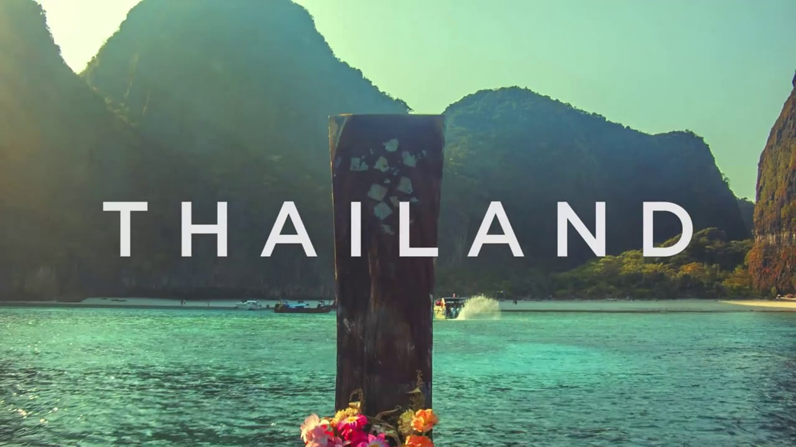

Land of Smiles: Bangkok
Land of Smiles: Bangkok
Packing for Bangkok
#1 Tip: Pack Light!
- Water, Water, Water: Stay hydrated! Not all the tap water is safe to drink in Thailand. Luckily, nearly every street vendor and shop will sell clean, cool bottled water.
- Sunscreen: The sun is fierce in Thailand. Protect yourself from the strong UV rays by lathering up in sunscreen and avoid sun burns!
- Bug Spray: Along with heat, the humidity attracts mosquitoes into the city. Protect yourself from the malaria infested pests with strong bug spray.
- Rain gear: Depending on what season you travel, this is especially important as Bangkok sees alot a rainfall (averal annual rain fall is 150 cm).
- Slip on shoes: This is most important for visiting the temples as you will be asked to remove your shoes before entering. It's best to avoid laces and have you a pair of slip ons.
- Long sleeved shirts or shawl and pants/skirts: Specifically for temple visits, covering your legs and arms before entering the sacred temples is a sign of respect.
- Bathing suit: Bangkok is hot, so get ready for several dips in any of the hotel pools around the city.
This will be your best friend...

Share your Thailand experience or ask any questions!